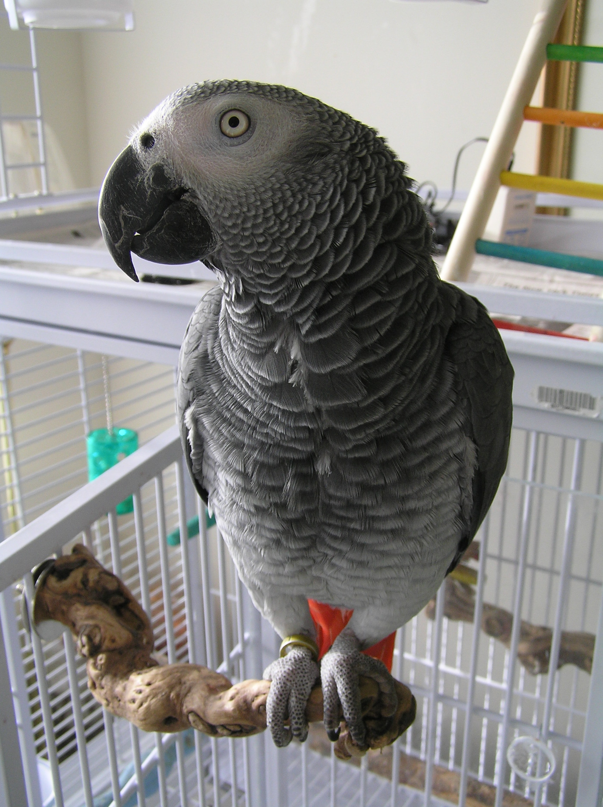
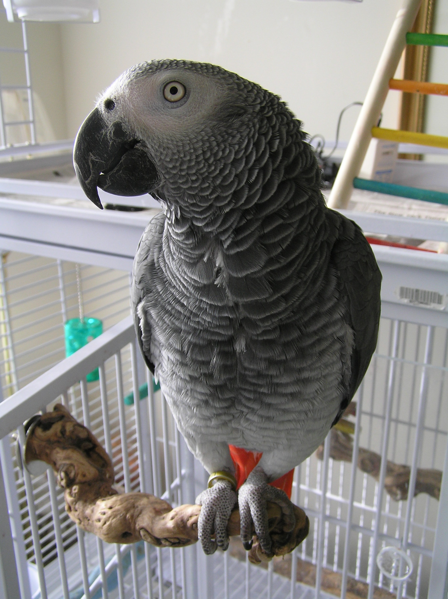

¿Quienes somos?
Petshop es una clínica veterinaria especializada en el cuidado y tratamiento de animales domésticos. Con un equipo de veterinarios altamente capacitados y experimentados, Petshop ofrece una amplia gama de servicios, desde chequeos regulares y vacunas hasta cirugías y tratamientos avanzados. En Petshop, el bienestar de los animales es la principal prioridad. Los veterinarios trabajan con cada mascota y su dueño para desarrollar planes de tratamiento personalizados que satisfagan las necesidades específicas de cada paciente. Además, Petshop cuenta con equipos de última generación y tecnología avanzada para garantizar la precisión y eficacia de cada procedimiento. Con un enfoque en la atención al cliente y la satisfacción del paciente, Petshop se esfuerza por brindar un ambiente acogedor y cómodo para las mascotas y sus dueños. Ya sea para una visita de rutina o un tratamiento complejo, los dueños de mascotas pueden estar seguros de que en Petshop su animal recibirá el mejor cuidado y atención.


 
